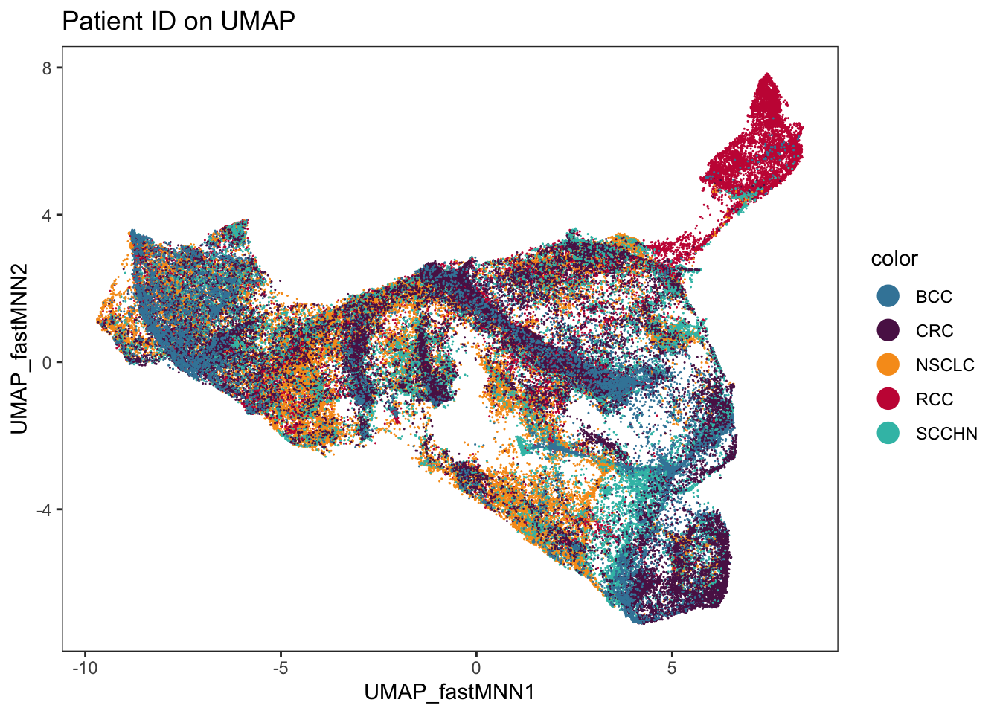
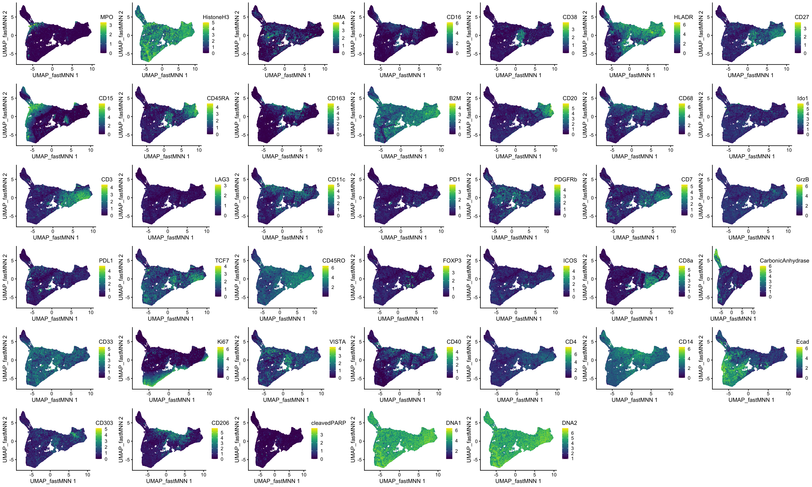

Sample effect corrections
Last updated: 2023-08-10
Checks: 7 0
Knit directory: Analysis/
This reproducible R Markdown analysis was created with workflowr (version 1.7.0). The Checks tab describes the reproducibility checks that were applied when the results were created. The Past versions tab lists the development history.
Great! Since the R Markdown file has been committed to the Git repository, you know the exact version of the code that produced these results.
Great job! The global environment was empty. Objects defined in the global environment can affect the analysis in your R Markdown file in unknown ways. For reproduciblity it’s best to always run the code in an empty environment.
The command set.seed(20220321) was run prior to running
the code in the R Markdown file. Setting a seed ensures that any results
that rely on randomness, e.g. subsampling or permutations, are
reproducible.
Great job! Recording the operating system, R version, and package versions is critical for reproducibility.
Nice! There were no cached chunks for this analysis, so you can be confident that you successfully produced the results during this run.
Great job! Using relative paths to the files within your workflowr project makes it easier to run your code on other machines.
Great! You are using Git for version control. Tracking code development and connecting the code version to the results is critical for reproducibility.
The results in this page were generated with repository version 21ddaa7. See the Past versions tab to see a history of the changes made to the R Markdown and HTML files.
Note that you need to be careful to ensure that all relevant files for
the analysis have been committed to Git prior to generating the results
(you can use wflow_publish or
wflow_git_commit). workflowr only checks the R Markdown
file, but you know if there are other scripts or data files that it
depends on. Below is the status of the Git repository when the results
were generated:
Ignored files:
Ignored: .DS_Store
Ignored: Alignment/
Ignored: Figures/.Rproj.user/
Ignored: Figures/output/.DS_Store
Ignored: Figures/output/Figure_1/
Ignored: IMC/.DS_Store
Ignored: IMC/Analysis/.DS_Store
Ignored: IMC/Analysis/.Rproj.user/
Ignored: comparisons/.DS_Store
Ignored: comparisons/.Rproj.user/
Ignored: comparisons/analysis/figure/
Ignored: comparisons/code/.DS_Store
Ignored: comparisons/code/.ipynb_checkpoints/
Ignored: mIF/.DS_Store
Ignored: mIF/Analysis/.Rproj.user/
Ignored: mIF/Analysis/analysis/.DS_Store
Ignored: mIF/Analysis/docs/.DS_Store
Unstaged changes:
Modified: IMC/Analysis/analysis/01_read_data.Rmd
Modified: mIF/Analysis/analysis/01_read_data.Rmd
Modified: mIF/Analysis/docs/01_read_data.html
Modified: mIF/Analysis/docs/figure/01_read_data.Rmd/buildSpatialGraph-1.png
Modified: mIF/Analysis/docs/figure/01_read_data.Rmd/buildSpatialGraph-2.png
Modified: mIF/Analysis/docs/figure/01_read_data.Rmd/buildSpatialGraph-3.png
Modified: mIF/Analysis/docs/figure/01_read_data.Rmd/buildSpatialGraph-4.png
Modified: mIF/Analysis/docs/index.html
Note that any generated files, e.g. HTML, png, CSS, etc., are not included in this status report because it is ok for generated content to have uncommitted changes.
These are the previous versions of the repository in which changes were
made to the R Markdown
(IMC/Analysis/analysis/04_sample_correction.Rmd) and HTML
(IMC/Analysis/docs/04_sample_correction.html) files. If
you’ve configured a remote Git repository (see
?wflow_git_remote), click on the hyperlinks in the table
below to view the files as they were in that past version.
| File | Version | Author | Date | Message |
|---|---|---|---|---|
| Rmd | 6abc57b | nilseling | 2023-08-07 | Recompiled workflow |
| html | 6abc57b | nilseling | 2023-08-07 | Recompiled workflow |
| Rmd | 6be185f | nilseling | 2023-08-07 | Smaller points in UMAP |
| Rmd | de85ab7 | nilseling | 2023-04-28 | Recompiled IMC and mIF workflows |
| html | de85ab7 | nilseling | 2023-04-28 | Recompiled IMC and mIF workflows |
| html | c5834d2 | nilseling | 2023-04-03 | Recompiled with new classifier |
| Rmd | c81be89 | nilseling | 2023-02-16 | Recompiled IMC workflow |
| html | c81be89 | nilseling | 2023-02-16 | Recompiled IMC workflow |
| html | 9abd60d | nilseling | 2022-11-09 | Compiled scripts |
| html | 329cfe6 | nilseling | 2022-08-19 | Added phenotype key for mIF |
| html | 4554a25 | nilseling | 2022-06-24 | Recompiled scripts |
| html | 8d1f8ec | nilseling | 2022-05-30 | Recompiled workflow |
| html | f7cc35b | nilseling | 2022-05-11 | Recompiled scripts |
| Rmd | c22d4e1 | nilseling | 2022-04-29 | Added more projects |
In the quality control section, we observe sample differences between tumor cells across the samples. We can now correct for these effect using batch effect correction methods developed for scRNAseq data.
Load data and libraries
First, we will load the data and libraries again.
library(batchelor)Warning: package 'MatrixGenerics' was built under R version 4.3.1Warning: package 'IRanges' was built under R version 4.3.1Warning: package 'GenomeInfoDb' was built under R version 4.3.1library(dittoSeq)
library(scater)Warning: package 'scuttle' was built under R version 4.3.1library(viridis)
library(DT)
library(BiocSingular)
library(cowplot)
sce <- readRDS("/Volumes/immucan_volume/processed_data/Panel_1/2022_WORKFLOW/IMC/Rout/sce.rds")Perform samples correction
Here, we will used the mutual nearest neighbour approach of the
batchelor package to integrate cells from different
patients.
set.seed(220321)
out <- fastMNN(sce, batch = sce$patient_id,
auto.merge = TRUE,
subset.row = rowData(sce)$use_channel,
assay.type = "exprs",
d = 30,
BSPARAM = ExactParam())
# Transfer the correction results to the main spe object
reducedDim(sce, "fastMNN") <- reducedDim(out, "corrected")Quality control of the correction results
We can now highlight samples that were more difficult to integrate than others.
merge_info <- metadata(out)$merge.info
datatable(data.frame(DataFrame(left = merge_info$left,
right = merge_info$right,
batch.size = merge_info$batch.size,
max_lost_var = rowMax(merge_info$lost.var))))Visualize corrected cells
As a visual assessment of sample correction, we visualize the integrated cells as UMAP.
set.seed(220321)
sce <- runUMAP(sce, dimred = "fastMNN", name = "UMAP_fastMNN")We can now visualize the patient IDs and expression on the UMAPs.
dittoDimPlot(sce, var = "patient_id", reduction.use = "UMAP_fastMNN", size = 0.2) +
scale_color_manual(values = metadata(sce)$color_vectors$patient_id) +
ggtitle("Patient ID on UMAP")
dittoDimPlot(sce, var = "indication", reduction.use = "UMAP_fastMNN", size = 0.2) +
scale_color_manual(values = metadata(sce)$color_vectors$Indication) +
ggtitle("Patient ID on UMAP")
p.list <- list()
for(i in rownames(sce)){
p.list[[i]] <- plotReducedDim(sce, colour_by = i, by_exprs_values = "exprs",
point_size = 0.1, point_alpha = 1, dimred = "UMAP_fastMNN")
}
plot_grid(plotlist = p.list, ncol = 7)
Save object
Finally, we will save the modified SingleCellExperiment
object.
saveRDS(sce, "/Volumes/immucan_volume/processed_data/Panel_1/2022_WORKFLOW/IMC/Rout/sce.rds")
sessionInfo()R version 4.3.0 (2023-04-21)
Platform: x86_64-apple-darwin20 (64-bit)
Running under: macOS Big Sur 11.7.4
Matrix products: default
BLAS: /Library/Frameworks/R.framework/Versions/4.3-x86_64/Resources/lib/libRblas.0.dylib
LAPACK: /Library/Frameworks/R.framework/Versions/4.3-x86_64/Resources/lib/libRlapack.dylib; LAPACK version 3.11.0
locale:
[1] en_US.UTF-8/en_US.UTF-8/en_US.UTF-8/C/en_US.UTF-8/en_US.UTF-8
time zone: Europe/Zurich
tzcode source: internal
attached base packages:
[1] stats4 stats graphics grDevices utils datasets methods
[8] base
other attached packages:
[1] cowplot_1.1.1 BiocSingular_1.16.0
[3] DT_0.28 viridis_0.6.4
[5] viridisLite_0.4.2 scater_1.28.0
[7] scuttle_1.10.2 dittoSeq_1.12.0
[9] ggplot2_3.4.2 batchelor_1.16.0
[11] SingleCellExperiment_1.22.0 SummarizedExperiment_1.30.2
[13] Biobase_2.60.0 GenomicRanges_1.52.0
[15] GenomeInfoDb_1.36.1 IRanges_2.34.1
[17] S4Vectors_0.38.1 BiocGenerics_0.46.0
[19] MatrixGenerics_1.12.3 matrixStats_1.0.0
[21] workflowr_1.7.0
loaded via a namespace (and not attached):
[1] bitops_1.0-7 gridExtra_2.3
[3] rlang_1.1.1 magrittr_2.0.3
[5] git2r_0.32.0 RcppAnnoy_0.0.21
[7] ggridges_0.5.4 compiler_4.3.0
[9] getPass_0.2-2 DelayedMatrixStats_1.22.1
[11] callr_3.7.3 vctrs_0.6.3
[13] stringr_1.5.0 pkgconfig_2.0.3
[15] crayon_1.5.2 fastmap_1.1.1
[17] ellipsis_0.3.2 XVector_0.40.0
[19] labeling_0.4.2 utf8_1.2.3
[21] promises_1.2.0.1 rmarkdown_2.23
[23] ps_1.7.5 ggbeeswarm_0.7.2
[25] xfun_0.40 zlibbioc_1.46.0
[27] cachem_1.0.8 beachmat_2.16.0
[29] jsonlite_1.8.7 highr_0.10
[31] later_1.3.1 DelayedArray_0.26.7
[33] BiocParallel_1.34.2 irlba_2.3.5.1
[35] parallel_4.3.0 R6_2.5.1
[37] bslib_0.5.0 stringi_1.7.12
[39] RColorBrewer_1.1-3 jquerylib_0.1.4
[41] Rcpp_1.0.11 knitr_1.43
[43] httpuv_1.6.11 Matrix_1.6-0
[45] igraph_1.5.0.1 tidyselect_1.2.0
[47] rstudioapi_0.15.0 abind_1.4-5
[49] yaml_2.3.7 codetools_0.2-19
[51] processx_3.8.2 lattice_0.21-8
[53] tibble_3.2.1 withr_2.5.0
[55] evaluate_0.21 pillar_1.9.0
[57] whisker_0.4.1 generics_0.1.3
[59] rprojroot_2.0.3 RCurl_1.98-1.12
[61] sparseMatrixStats_1.12.2 munsell_0.5.0
[63] scales_1.2.1 glue_1.6.2
[65] pheatmap_1.0.12 tools_4.3.0
[67] BiocNeighbors_1.18.0 ScaledMatrix_1.8.1
[69] fs_1.6.3 grid_4.3.0
[71] crosstalk_1.2.0 colorspace_2.1-0
[73] GenomeInfoDbData_1.2.10 beeswarm_0.4.0
[75] vipor_0.4.5 cli_3.6.1
[77] rsvd_1.0.5 fansi_1.0.4
[79] S4Arrays_1.0.5 dplyr_1.1.2
[81] uwot_0.1.16 ResidualMatrix_1.10.0
[83] gtable_0.3.3 sass_0.4.7
[85] digest_0.6.33 ggrepel_0.9.3
[87] farver_2.1.1 htmlwidgets_1.6.2
[89] htmltools_0.5.5 lifecycle_1.0.3
[91] httr_1.4.6